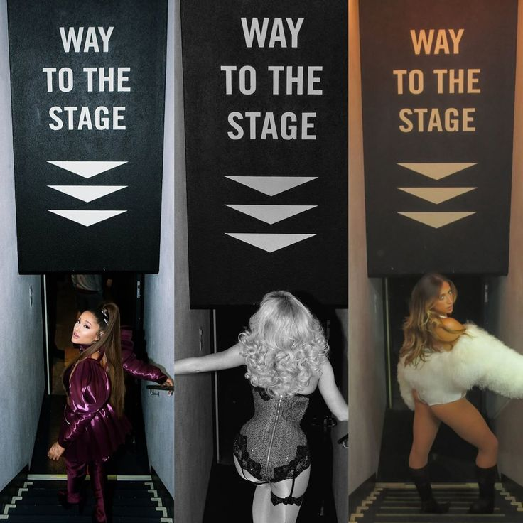

Mijn favoriete
popartiesten
Welkom in mijn Digital Garden! ✨
Dit is mijn eigen POP GIRLS wereld, vol met mijn favoriete vrouwelijke popartiesten. Van Ariana Grande en Sabrina Carpenter tot Olivia Rodrigo, Roxy Dekker en Tate McRae. Ontdek hun muziek, stijl, foto's en leuke weetjes. Elke artiest heeft haar eigen uitstraling en style en samen vormen ze mijn favoriete popwereld.
ONTDEK MIJN FAVORIETEN →
Over mijn project
Ik heb gekozen voor vrouwelijke popsterren omdat ik erg van dat soort genre muziek hou. Ik vind het leuk om te kijken naar hun muziek, kleding, stijl en uitstraling. Ook vind ik het interessant hoe iedere artiest zich op een andere manier presenteert. Daarom heb ik gekozen voor Ariana Grande, Sabrina Carpenter, Olivia Rodrigo, Roxy Dekker en Tate McRae. Ik vind hun muziek leuk en ze hebben allemaal hun eigen stijl. Met mijn Digital Garden wil ik meer over deze artiesten laten zien en verschillende foto's en links verzamelen. Ik heb informatie, foto's en links verzameld om een digitale verzameling te maken die ik steeds verder kan uitbreiden.
Hieronder staan mijn sfeerwoorden: